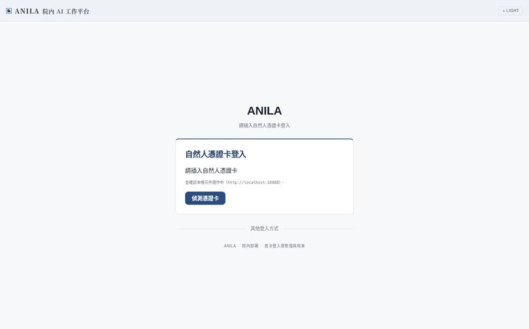
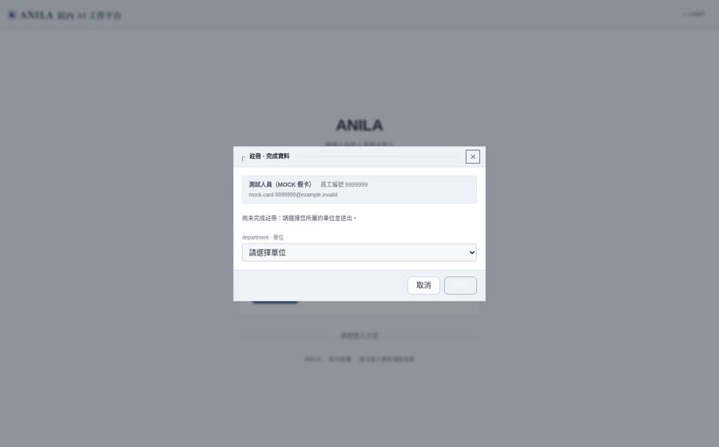
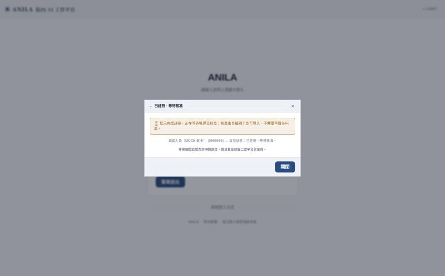
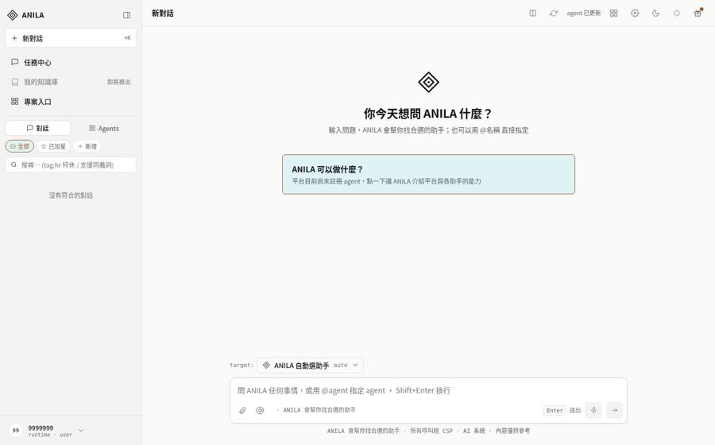
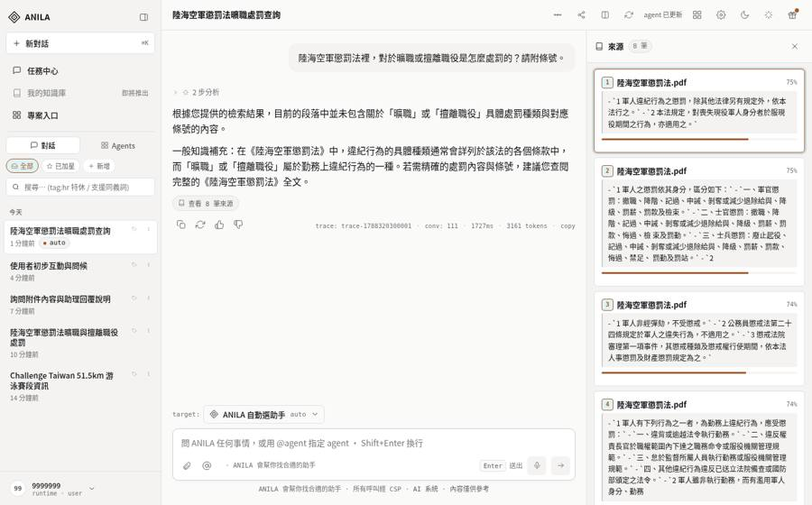

中科院院內 AI 平台 · 給第一次使用的同仁
這份手冊不需要從頭讀完。第 1、2 節看完就能開始用；其餘的等你遇到再回來查。
ANILA 是院內自己的 AI 對話平台。你可以拿它問問題、整理文件、查院內規章、產生草稿。
它跑在院內網路裡——你的問題和上傳的檔案不會離開院內， 平台也連不到外面的網際網路。
它是助手，不是權威。 AI 會產生看起來很有把握、但其實錯誤的內容。 凡是要當成依據的事情——法規條號、金額、日期、人名——請回到原始文件核對。 平台在引用院內規章時會附上來源，就是為了讓你能核對。
登入需要本機已裝讀卡元件（中華電信本機元件，位址 http://localhost:16888）。
內網配發的電腦預設已裝好；若畫面顯示「尚未安裝」，表示元件沒裝或沒起——聯絡資訊室。
用你的自然人憑證卡登入：插卡 → 開啟平台網址 → 按「偵測憑證卡」→ 畫面顯示你的姓名與員工編號 → 輸入 PIN 碼 → 「簽章送出」。 不需要另外記帳號密碼。

第一次刷卡，平台會跳出「註冊 · 完成資料」：選你所屬的單位，按送出。 接著會看到「已註冊 · 等待核准」——這時不用再做任何事，管理員核准後直接再刷卡就能進來。 等候期間要查進度，找貴單位窗口或平台管理員。


下拉選單裡沒有任何單位可選？那是平台還沒把單位建好，不是你的問題——請管理員先建單位（管理員手冊第 1 節）。
卡片請隨手拔。 卡片留在讀卡機上等於帳號留在登入狀態， 別人坐下就能以你的身分使用，而所有使用紀錄都會記在你名下。
在下方輸入框打字、按 Enter 送出。就這樣。

| 你想做的事 | 怎麼做 |
|---|---|
| 換行不送出 | Shift + Enter |
| 重問一次（答案不理想） | 答案下方的「重新產生」 |
| 改自己剛才的問題 | 在你的訊息上點編輯，改完重送——原本那版會保留，可以左右切換比較 |
| 開新主題 | 左上「新對話」。不同主題請開不同對話，答案會比較準 |
平台查過規章時，答案下方會出現「查看 N 筆來源」；點開會列出每一筆的檔名、相似度與條文摘錄，請回到那裡核對。 答案上方若寫「本次未檢索院內規章，以下為模型的一般知識」，表示這一題平台沒有去查——那段回答不能當依據。

平台有一個院內規章知識庫。當你的問題像是在問規章，它會先去查， 再根據查到的條文回答，並在答案下方列出來源。
看到「查看來源」就代表這個答案有依據。 點開可以看到它引用了哪幾份文件、哪幾條。 要當依據的時候，請點開核對。
不是每個問題都會觸發規章檢索。當平台沒有去查的時候，答案上方會出現一句：
本次未檢索院內規章，以下為模型的一般知識
看到這句話，就表示這個答案沒有院內規章當依據，是 AI 依照它自己的訓練知識回答的。 問題如果跟院內規定有關，請不要直接採用。
⚠ 這句話只描述「平台做了什麼」，不代表院規裡沒有這條規定—— 可能只是這次沒有查，或是那份規章還沒有上架。
平台查了、但沒有找到夠相關的條文時，也會明講。這種時候換個問法常常有用： 把口語換成規章裡會出現的詞（例如把「請假」換成「差勤」）。
你可以把檔案附在對話裡問它，也可以放進知識庫長期使用。
檔名取得好不好，比檔案內容重要。
平台是靠檔名幫你找檔案的。簽呈.pdf、掃描檔.pdf、新增資料夾.docx
這種名字，過三個月連你自己都找不到。
請用看得出是什麼的名字，例如 差勤管理辦法-1140301修正.pdf。
純掃描的 PDF 裡面沒有文字，只有圖。平台會盡量辨識， 但辨識結果不一定完整。如果查不到你確定寫在裡面的內容，多半是這個原因。
為了讓對話更順，平台會記住一些關於你的長期資訊（例如你的單位、你偏好的回答方式）， 在後續對話裡自動帶入。
設定 → 記憶。裡面分兩塊：平台歸納出的「事實」，以及過往對話片段。 兩邊都可以逐筆刪除，也可以整批清空。
記憶不會離開平台。 當你使用同仁自行掛上來的助手（agent）時， 平台不會把你的記憶送給它——那些助手是由開發者自己指定連到哪裡的， 所以你的長期記憶只在平台自己的模型裡使用。
平台上除了一般對話，還有同仁掛上來的專門助手（例如專門查某類法規的）。
| 功能 | 用途 |
|---|---|
| 交給其他助手 | 把目前這個問題轉給另一個助手回答 |
| 比較模式 | 同一個問題同時問兩個助手，左右並排看答案 |
不確定哪個助手適合時，直接問就好——平台會自己判斷要不要轉給專門的助手。
工具列的專案入口會列出院內其他可用的系統。 這裡只是入口，點了會開新分頁，各系統有自己的權限。
設定分成五個分頁：一般、隱私 / 信任、記憶、 帳號、關於。
大部分人只會用到兩個：記憶（看和刪，見第 5 節）與 帳號（確認自己的身分與單位）。
| 狀況 | 可能原因與處理 |
|---|---|
| 答案答非所問 | 先試「重新產生」。如果問題裡有條號、日期這類關鍵數字，換個寫法再問一次（例如「第46條」不加空格） |
| 查不到我確定有的規章 | ①換成規章裡的正式用詞；②確認那份規章已經上架；③看答案上方有沒有「本次未檢索院內規章」 |
| 上傳的檔案問不出內容 | 多半是掃描檔（見第 4 節） |
| 畫面卡住或空白 | 重新整理頁面。對話內容都存在伺服器，不會因為重整而消失 |
| 登入失敗 | 確認卡片插好、PIN 沒鎖。連續輸錯會鎖卡，需要重新申請。若畫面顯示「尚未安裝中華電信本機元件」，是讀卡元件沒裝或沒起——聯絡資訊室 |
回報問題時請附上這三樣：你問了什麼、你預期什麼、畫面上出現什麼。 只說「壞掉了」很難查——平台每天有很多人在用，同一個畫面在不同人身上可能完全不同。
請不要把你自己也不確定能不能給 AI 看的東西貼進來。 平台在院內、資料不外流，但「誰能看到什麼」仍然依照你原本的權限與密等規定。 不確定的時候，先問你的主管或業務單位。